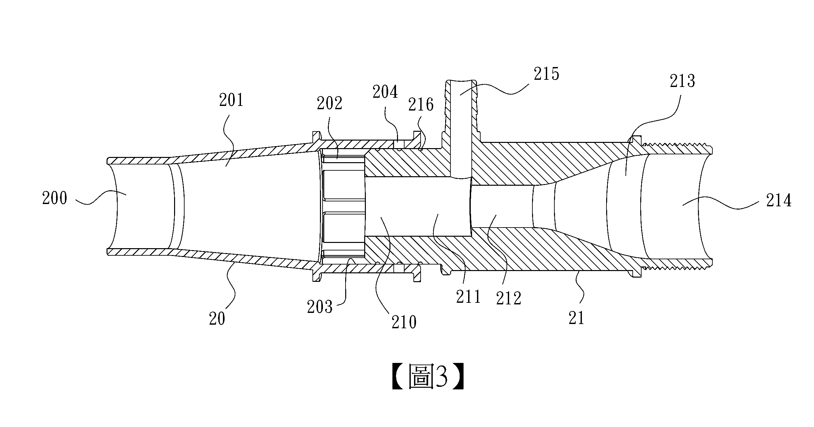
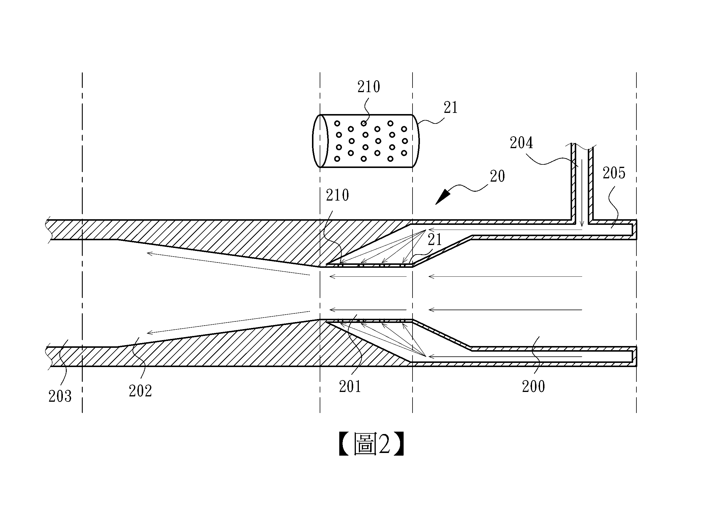
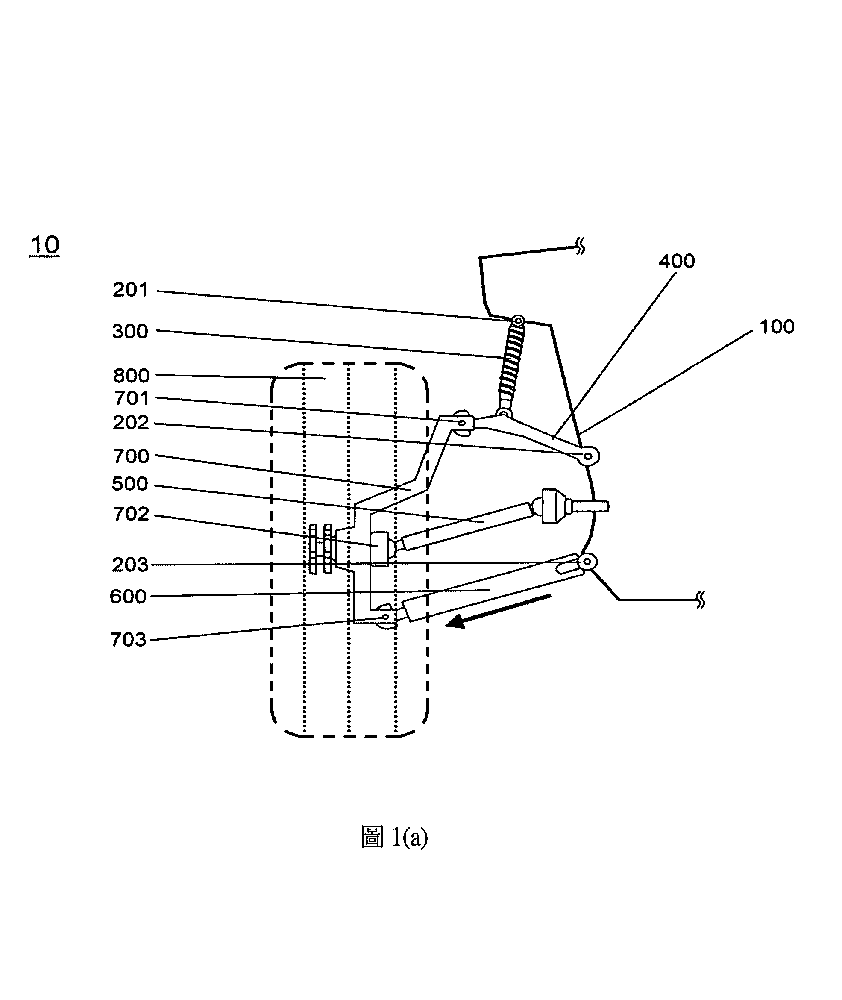
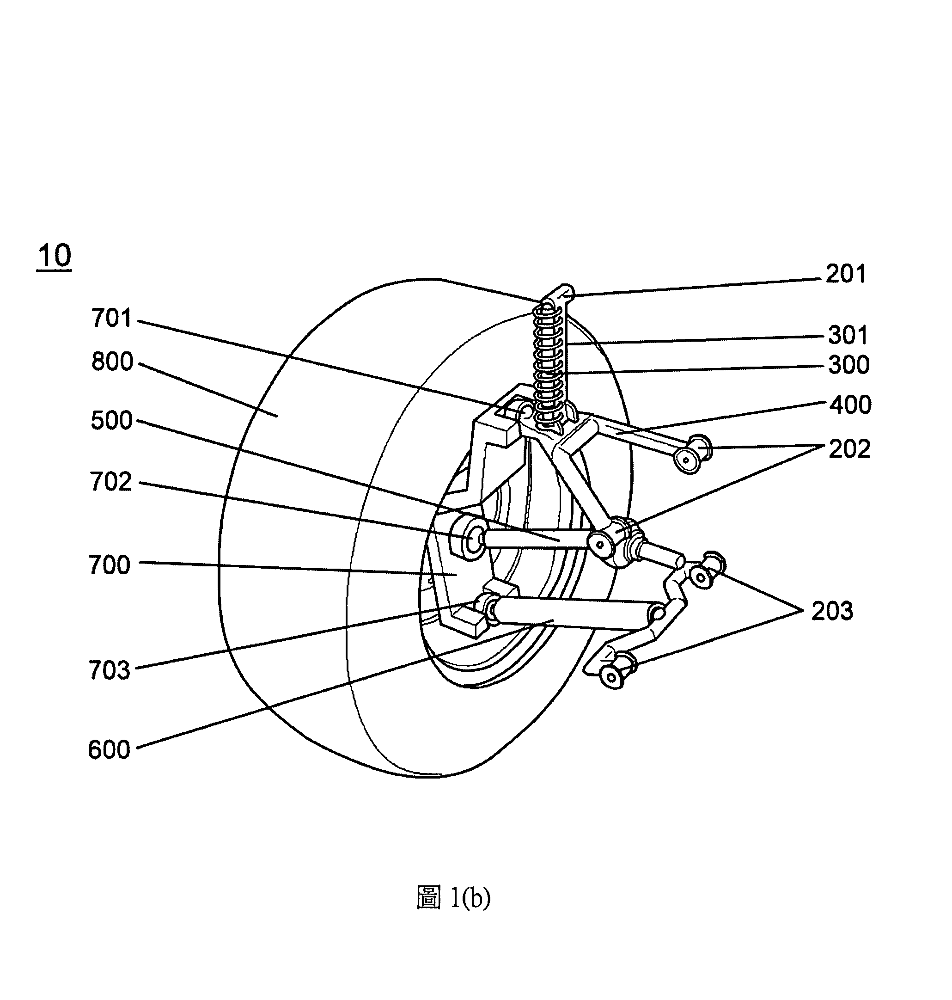

Five granted patents across water treatment, vehicle suspension, and UAV control systems. Each project followed the full NPI lifecycle — from initial concept through prototyping, IP filing, and production tooling.
Traditional water filtering modules suffered from uneven flow distribution and rapid filter degradation, causing significant maintenance downtime in industrial applications.
Engineered a multi-stage hydrodynamic filter core with optimized fluid pathways. Reduced internal pressure drop by 15% and extended component lifecycle through structural redesign. Successfully transitioned design to injection molding mass production.


Military and commercial amphibious marine vehicles face extreme shock loads when transitioning between terrestrial and aquatic environments, risking drivetrain failure.
Developed a dual-redundant suspension and track module that dynamically absorbs hydrodynamic shocks. Led the engineering team through rigorous FEA simulations and physical field testing to validate extreme-load structural integrity.

